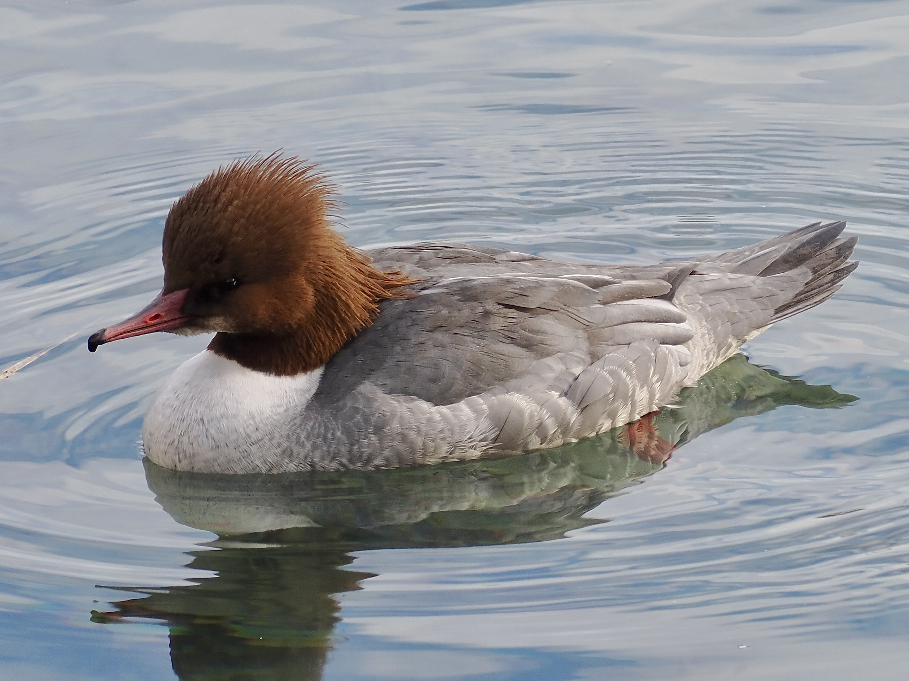
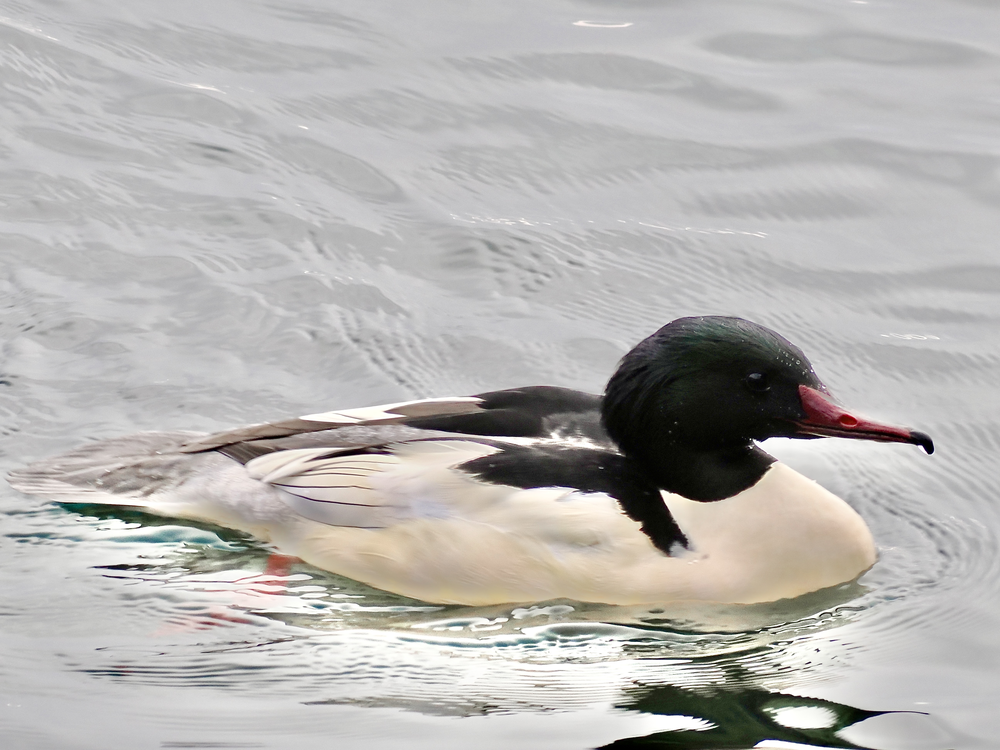
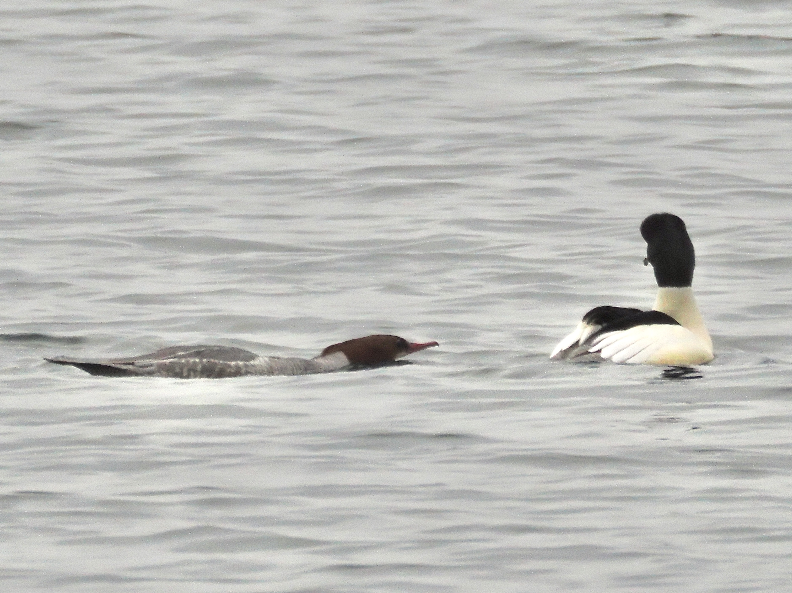

Common Merganser
Mergus merganser
Other names: Goosander
Order: Anseriformes
Family: Anatidae

A large saw-billed diving duck. Female has a chic and explosive hairstyle. Head is orange while body is grey.

Unlike other ducks, male has a more conservative look, with a white body, dark back and smooth green head.

This is probably some kind of mating display. The female flattens her body to signal that she is ready.